Executive Summary
The clean conclusion is that AR/IVM cross-asset option-implied stress is a useful protection layer. It improves drawdown and risk-adjusted behavior in a simple shifted-signal exposure overlay, but it should not yet be described as a fully optimized trading strategy.
Stress-regime measurement, event-rate lift, risk-control overlays, and a research path toward implementation tests.
A causal macro-driver claim, a production trading rule, or a claim that AR/IVM beats VIX term structure as a direct drawdown probability model.
Research Review Assessment
A hedge-fund research review would likely see the study as promising but not final. The strongest evidence is in measurement and protection; the weakest point is strategy parameter selection.
| Area | Critique | Refinement |
|---|---|---|
| Data | AR/IVM is a strong daily options panel, but selected futures prices should be checked against clean roll-adjusted futures returns. | Add Bloomberg continuous-futures returns and compare realized-return correlations. |
| Signal construction | The stress score is an equal-weighted composite of z-scored components. | Report components, decile event rates, and pre-specified alternative weightings. |
| PCA | PCA absorption measures concentration, not causality. | Compare against DCC, spillover networks, and factor-loading stability. |
| Forecasting | VIX term structure remains the stronger direct event forecaster. | Frame AR/IVM as a state variable and test incremental value with fixed models. |
| Backtest | The overlay is interpretable, but threshold sweeps can overfit. | Use train/validation/test splits and test realistic hedge instruments. |
| Claims | The evidence supports stress detection and drawdown control, not an optimized trading model. | State conclusions as protection-layer evidence. |
Research Design
The design is deliberately simple. The first question is whether the market-data signal survives basic point-in-time tests before adding a more complex agent or hedge implementation.
Data Coverage
| Block | Rows | Start | End | Columns |
|---|---|---|---|---|
| Daily Bloomberg benchmark panel | 4,161 | 2010-01-04 | 2026-07-21 | 51 |
| Nasdaq AR/IVM option-implied features | 5,078 | 2007-01-02 | 2026-08-07 | 522 |
| Bloomberg intraday ES impulse workbook | 45,576 | 2026-02-05 | 2026-07-30 | 21 tickers |
The daily AR/IVM panel is sufficient for preliminary stress-regime conclusions because it spans multiple market regimes from 2007 onward.
The 140-day 60-minute workbook is a method demonstration, not final evidence for macro-driver attribution.
The highest-priority addition is clean roll-adjusted continuous futures returns and realistic hedge-instrument data.
Stress Signal Evidence
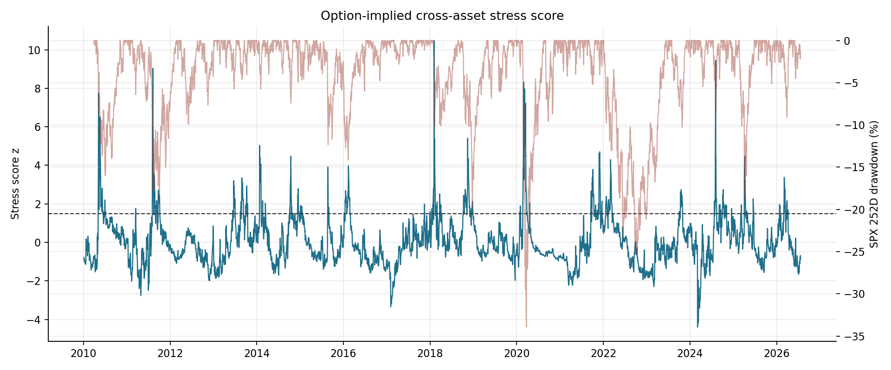
The stress score rises around major equity stress regimes, but it is not a perfect binary switch.
Signal construction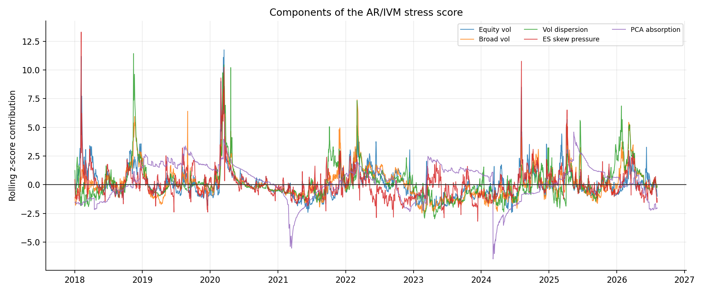
The score is an interpretable average of equity vol, broad vol, dispersion, skew pressure, and PCA absorption.
Signal construction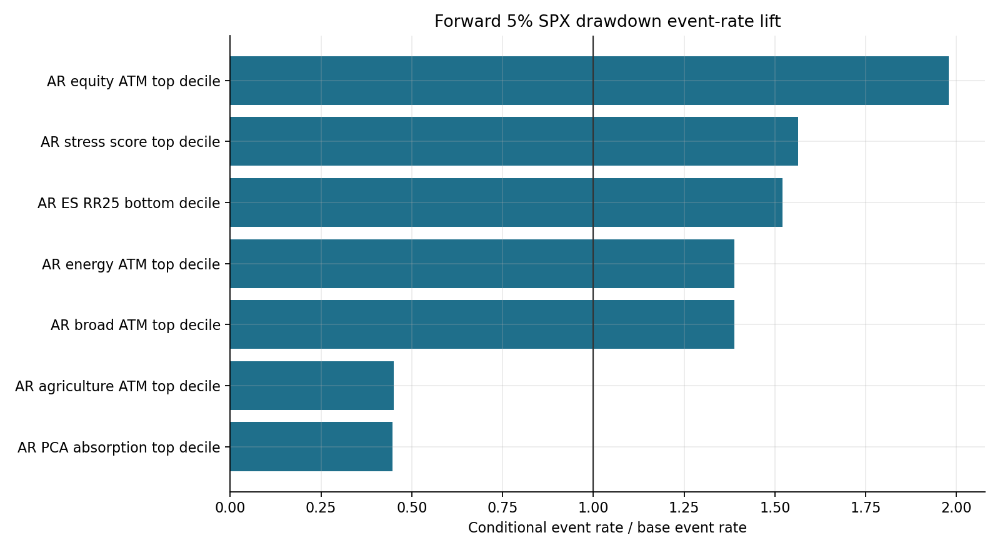
Top-decile equity ATM implied volatility and downside-skew pressure materially increase future drawdown event rates.
Event tests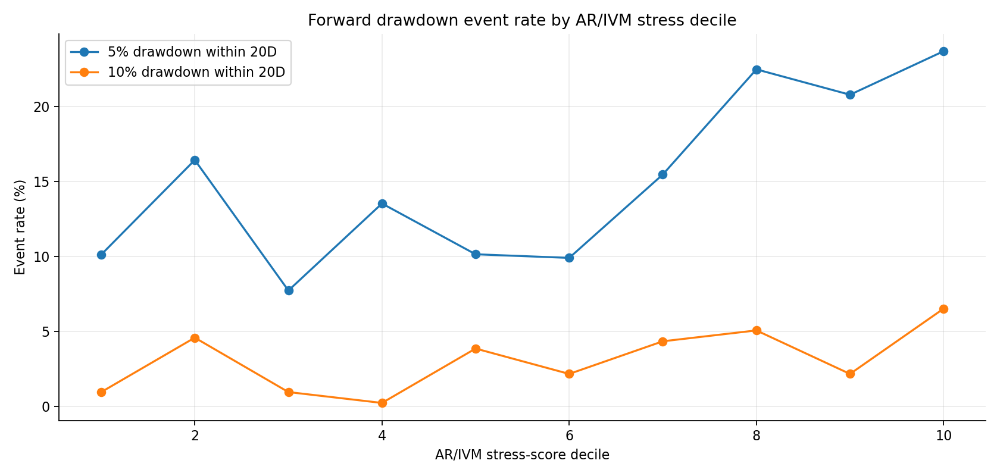
Drawdown risk is most visible in the upper tail of the stress-score distribution.
RobustnessForecasting Benchmark
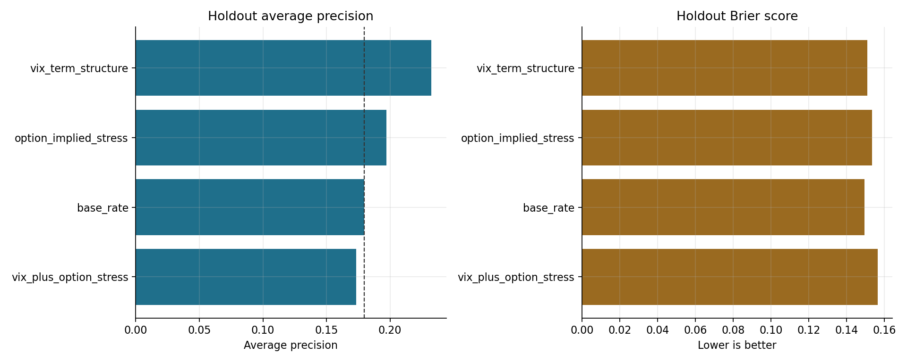
VIX term structure remains the strongest direct event-forecasting benchmark. AR/IVM is more useful as a stress state variable.
ForecastingMetric definitions
| Average precision | Rare-event ranking metric. Higher means true drawdown events tend to receive higher predicted risk scores. |
|---|---|
| Brier score | Mean squared probability forecast error. Lower means predicted probabilities are closer to realized outcomes. |
| ROC AUC | Ranking metric over all classification thresholds. Useful, but less informative than average precision when events are rare. |
| Holdout | A test sample not used for model fitting. The main holdout here begins in 2020. |
Protection Strategy
| 2020+ strategy | Cumulative return | Annual return | Vol | Sharpe | Max drawdown | Worst day | Exposure |
|---|---|---|---|---|---|---|---|
| SPXT buy and hold | 152.9% | 15.5% | 20.5% | 0.75 | -33.8% | -12.0% | 100.0% |
| Reference AR/IVM 85/50 overlay | 145.3% | 14.9% | 16.7% | 0.90 | -25.0% | -6.0% | 91.7% |
| VIX-term model overlay | 87.5% | 10.2% | 13.5% | 0.76 | -21.2% | -6.0% | 80.3% |
| Combined model overlay | 105.9% | 11.9% | 19.0% | 0.62 | -31.3% | -12.0% | 92.6% |
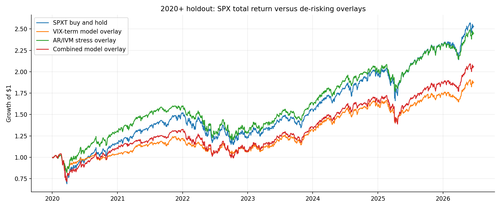
The reference AR/IVM overlay preserves most upside while reducing risk relative to buy-and-hold.
Backtest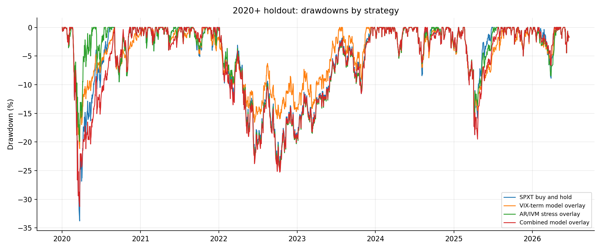
The drawdown plot shows the protection objective directly: lower drawdown depth and smaller worst-day exposure.
Backtest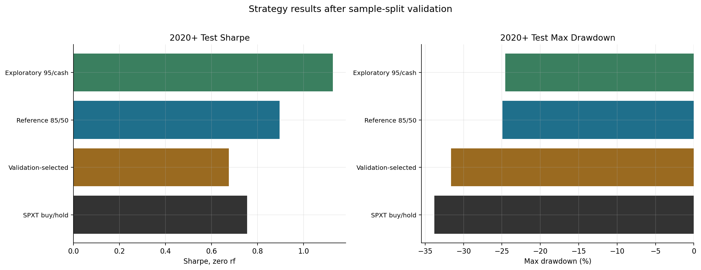
Parameter selection is fragile. The reportable claim should be the reference overlay, not an optimized market-timing rule.
ValidationThe starting rule is simple: reduce SPX exposure to 50% when the AR/IVM stress score exceeds a pre-specified 85th percentile. The next version should test Treasury futures, SPX option spreads, VIX futures, and dynamic beta reduction instead of only cash de-risking.
PCA Concentration
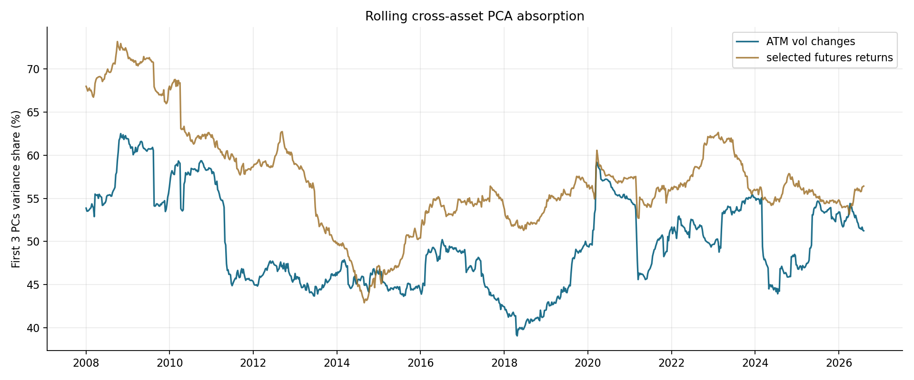
Absorption measures whether cross-asset moves are being driven by fewer common factors. It is a concentration measure, not a causal explanation.
PCA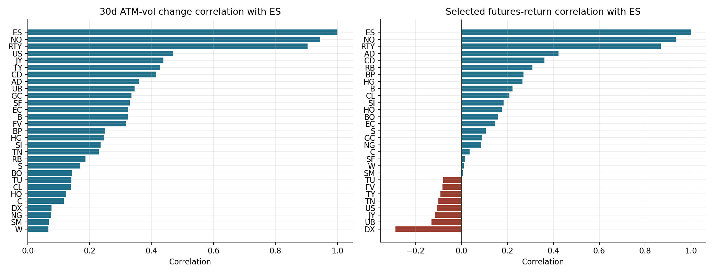
ES implied-volatility stress co-moves most with NQ and RTY, but also connects to duration, yen, gold, FX, energy, and metals.
Cross-assetIntraday ES Impulse Case Study
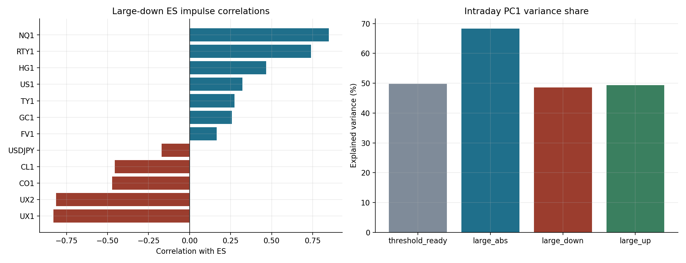
The intraday workflow recovers a familiar risk-off basket, but the sample is too short for final macro-driver claims.
IntradayFigure Gallery
Use the buttons to filter the core exhibits. These are the same essential figures saved in paper_assets/figures/ for later LaTeX drafts.
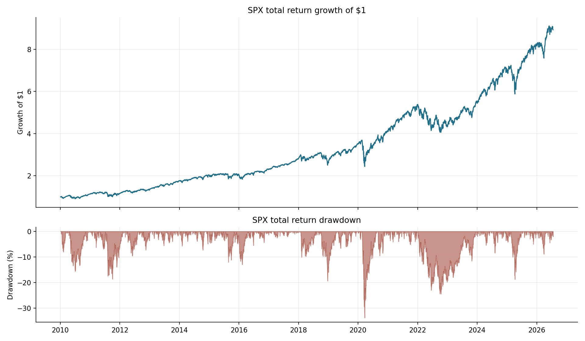
Large drawdowns motivate a protection overlay.
MotivationCross-asset option-implied stress around drawdown regimes.
SignalInterpretable stress-score building blocks.
SignalConditional drawdown risk rises after option-implied stress extremes.
SignalEvent-rate monotonicity check across stress-score bins.
SignalVIX term structure remains the stronger direct forecaster.
ModelReference AR/IVM overlay versus SPX total return.
StrategyDrawdown comparison across protection overlays.
StrategyRule selection check against overfitting.
StrategyCross-asset concentration in the first few principal components.
PCAOption-implied and selected futures return correlations with ES.
PCAConditional correlation and PCA on large 60-minute ES moves.
IntradayExtensions And Final-Paper Refinements
| Priority | Extension | Purpose |
|---|---|---|
| High | Roll-adjusted futures returns | Validate AR/IVM selected futures prices against a clean realized cross-asset return panel. |
| High | Walk-forward rule selection | Select thresholds and exposure levels without using the final test window. |
| High | Hedge implementation tests | Compare cash, Treasury futures, SPX put spreads, VIX futures, and dynamic beta reduction. |
| Medium | DCC and spillover benchmarks | Test whether PCA adds information beyond standard dynamic dependence models. |
| Medium | Signal stability by regime | Check whether the AR/IVM score behaves differently in volatility, inflation/rates, and commodity shocks. |
| Medium | Longer intraday history | Move the ES impulse section from method demonstration to cross-regime evidence. |
| Later | Timestamp-valid LLM synthesis | Summarize macro narratives after structured market-data signals are fixed and auditable. |
Claim language to use
Cross-asset option-implied stress contains useful information about future equity drawdown regimes and can improve a simple protection overlay. The current evidence supports risk-control use, not a fully optimized trading model.
Claim language to avoid
Avoid saying the model predicts large drawdowns, identifies causal macro drivers, or proves an investable strategy. Those claims require additional data, formal hedge implementation, and stricter walk-forward validation.
Source notebook: notebooks/Paper_Draft.ipynb. Curated LaTeX assets are in paper_assets/.